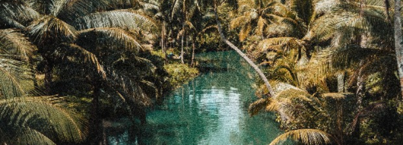
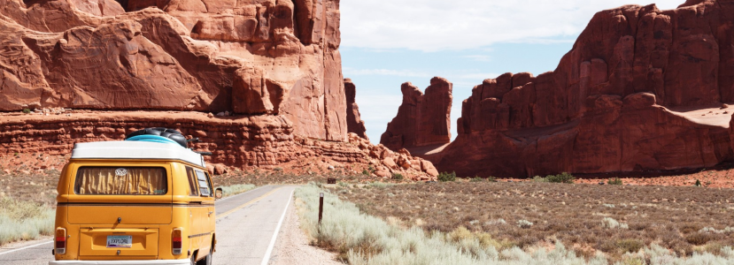

North Africa, with its rich history, captivating landscapes, and diverse cultures, is a treasure trove of unique travel experiences. From ancient ruins to bustling markets, and breathtaking desert vistas to coastal havens, this region offers a kaleidoscope of adventures waiting to be explored. If you're planning a trip to North Africa, here are the top 10 must-visit places to add to your itinerary:
Immerse yourself in the vibrant atmosphere of Marrakech, Morocco's "Red City." Lose yourself in the maze-like streets of the medina, where colorful souks offer a variety of spices, textiles, and handicrafts. Visit the iconic Jardin Majorelle and explore the historical Bahia Palace for a glimpse into the city's storied past.
No visit to North Africa is complete without witnessing the majestic Pyramids of Giza. These ancient wonders have stood tall for millennia and continue to awe visitors with their architectural brilliance. Marvel at the Great Pyramid, Sphinx, and nearby temples as you delve into Egypt's legendary past.
Tunis, the capital of Tunisia, is a fascinating blend of old and new. Explore the medina's narrow alleys and discover intricate architecture, ornate mosques, and vibrant markets. Don't miss the Bardo Museum, home to a remarkable collection of Roman mosaics and artifacts.
Nestled amidst the Rif Mountains, Chefchaouen is a picturesque town known for its blue-painted buildings. Stroll through the charming streets, breathe in the mountain air, and unwind in this enchanting haven.
Delve deeper into Egypt's history and culture in Cairo, a city that never sleeps. Visit the Egyptian Museum to witness an extensive collection of antiquities, including the famous treasures of Tutankhamun. Be sure to explore the bustling Khan El Khalili bazaar for an authentic Egyptian shopping experience.
Fez is Morocco's oldest imperial city, exuding an old-world charm that transports visitors back in time. Wander through the UNESCO-listed medina, where age-old traditions come alive in the artisan workshops and medieval architecture.
Embark on an unforgettable desert adventure in the Sahara, the world's largest hot desert. Ride a camel over the mesmerizing sand dunes, camp under a canopy of stars, and experience the magic of a desert sunrise.
Step into the realm of pharaohs in Luxor, Egypt's open-air museum. Explore the Valley of the Kings, where ancient tombs reveal the burial sites of Egyptian rulers. Wander through the grand temples of Luxor and Karnak, where colossal pillars and intricate carvings tell tales of a glorious past.
For a peaceful coastal retreat, head to Asilah. This charming seaside town boasts a blend of Moroccan and Portuguese influences, evident in its whitewashed buildings and tranquil atmosphere. Don't miss the annual Asilah Arts Festival, where the town transforms into an open-air art gallery.
End your North African journey in Alexandria, a city steeped in history and mystery. Explore ancient ruins, including the Roman Amphitheatre and Pompey's Pillar. Wander along the Corniche and soak in breathtaking views of the Mediterranean Sea.
To Conclude, North Africa's allure lies in its ability to transport visitors through time, from ancient civilizations to vibrant modern cultures. Whether you're exploring bustling cities, wandering through historic medinas, or venturing into the Sahara's sands, this region promises an unforgettable adventure filled with wonders of the past and the warmth of its people. So pack your bags and embark on a journey to discover the Top 10 places to visit in North Africa.
. From the world-renowned Kruger National Park to the family-friendly Johannesburg Zoo, each destination promises an unforgettable experience with the animal kingdom. Embark on a journey to these South African zoos and let the magic of the wild captivate your heart.